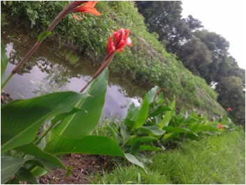

PlantaE
Construcción de un humedal piloto para tratamiento de aguas residuales mediante fitorremediación.
Grupo de jóvenes consciente de la demanda copiosa de soluciones creativas, eficaces y sustentables de los problemas de contaminación del aire, de la tierra y en especial, del agua. Plantae ha iniciado la construcción de un humedal piloto replicable que tendrá capacidad de tratar hasta 300,000 litros por lote en el sur del estado de Tlaxcala, marcado por los ríos Atoyac y Zahuapan y característico por su alta actividad agrícola e industrial. El tratamiento del medio ambiente apoyado en las interacciones bioquímicas entre plantas y microorganismos es denominado fitorremediación y existe desde los albores de la vida así como durante los últimos años a través de la biotecnología de humedales artificiales. Ha sido comprobado que el tratamiento de aguas residuales domésticas, industriales y agrícolas por humedales artificiales es una opción sustentable y barata frente los procesos convencionales. Por otra parte se desarrollan proyectos secundarios para aprovechar la biomasa producida por los humedales: compostas, forrajes, floricultura y biocombustibles; además de promover la educación ambiental a través de conferencias y capacitaciones a estudiantes, profesores, productores y actores gubernamentales. De esta manera Plantae, con la agradecida colaboración del ITESM Campus Puebla y Campus Estado de México, SIFE ITESM Puebla, la Universidad Autónoma de Tlaxcala, la Universidad Politécnica de Tlaxcala, la Universidad Politécnica de Pachuca, el Centro de Investigación y Estudios Avanzados del Instituto Politécnico Nacional, el Jardín Etnobotánico de Cholula y el Jardín Botánico de Tizatlán, busca resolver la urgencia de las comunidades, del gobierno y de la actividad industrial de garantizar agua limpia mediante procesos sustentables, coadyuvando al equilibrio ambiental, ecológico y social.
